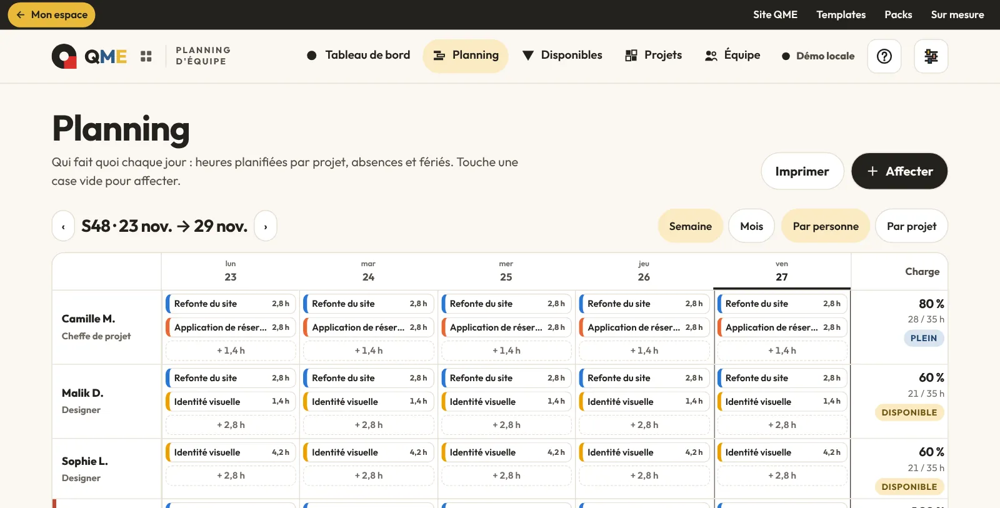
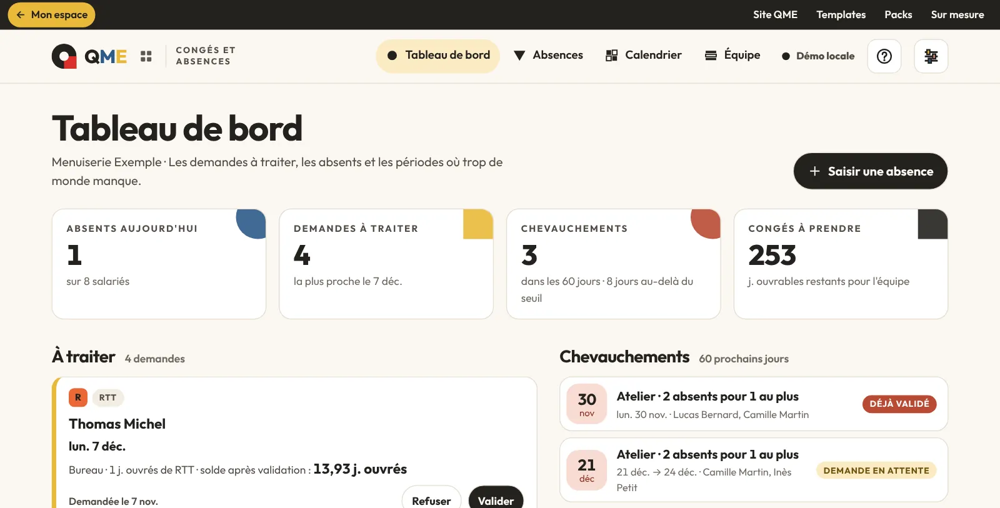
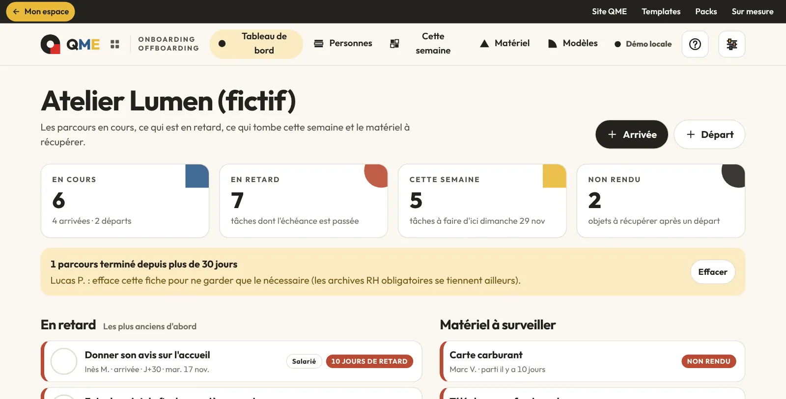
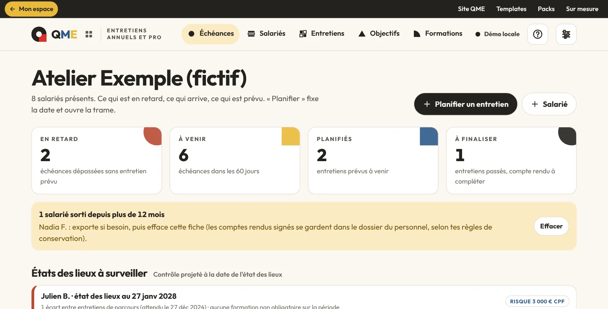
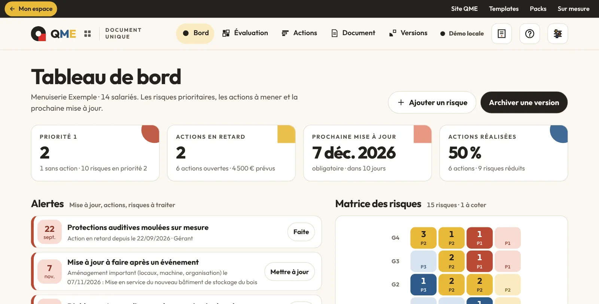
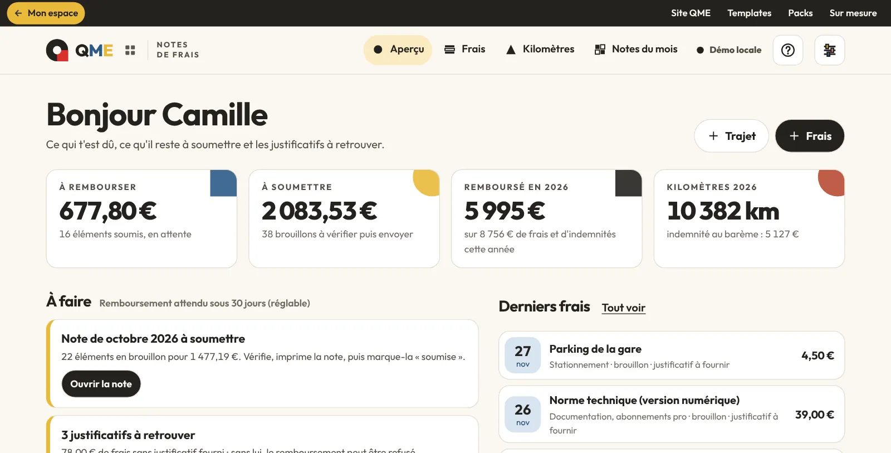
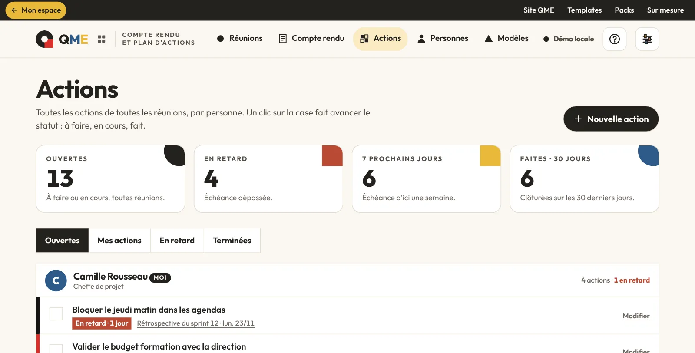
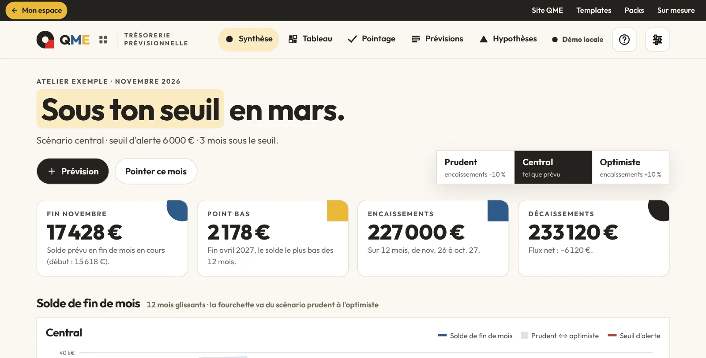
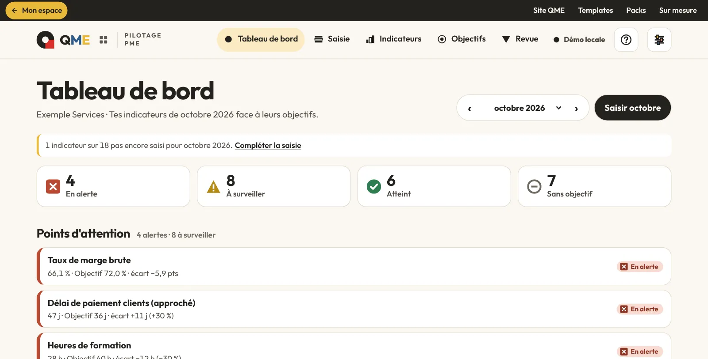

Concept pour les entreprises de propreté · pack prêt à l'emploi
Vos agents, vos sites et vos obligations d'employeur, au même endroit.
Neuf outils en ligne, déjà prêts, conçus par un ingénieur pour une entreprise de 10 à 50 salariés : le planning des équipes, les congés, les arrivées et les départs, les entretiens professionnels, le document unique, les notes de frais, les réunions, la trésorerie et les indicateurs. Chacun s'ouvre tout de suite en démo, sans inscription, et l'ensemble peut être adapté sur mesure à votre façon de travailler.
Chaque démo ouvre une entreprise fictive (salariés, projets et chiffres inventés, souvent un atelier ou une agence), sans inscription. Elle reste dans votre navigateur et n'envoie rien. Toutes les données affichées sur cette page sont fictives.
Le quotidien
Des agents à temps partiel répartis sur des dizaines de sites, des absences à remplacer le matin même, des arrivées et des départs tout au long de l'année, le tout suivi sur un tableur et dans le téléphone du gérant.
Ce que cela coûte
Un site découvert parce que deux congés se chevauchaient, un badge jamais rendu, un entretien professionnel oublié depuis des années, un document unique qui n'a pas bougé depuis sa création.
Ce que fait le pack
Il tient les plannings, les soldes, les checklists et les échéances d'employeur, met ce qui est en retard en tête de liste et imprime ce qu'il faut présenter.
La gestion de l'entreprise, en neuf outils
Regroupés par usage. Chaque capture vient de la démo réelle de l'outil.
- 01Planning
- 02Congés
- 03Arrivées et départs
- 04Entretiens
- 05Document unique
- 06Notes de frais
- 07Réunions
- 08Trésorerie
- 09Indicateurs
01 · Les équipes
Chaque site client couvert, chaque agent à sa charge réelle
Les sites et les postes à couvrir, semaine par semaine : qui va où, combien d'heures, et ce qui manque quand quelqu'un est absent.
- Chaque site client tenu comme un poste à couvrir, avec ses heures par semaine
- Temps partiels et jours travaillés de chaque agent pris en compte
- Surcharges, trous et agent affecté pendant ses congés signalés

02 · Les équipes
Congés et absences, sans site découvert
Les soldes calculés, les demandes validées en un geste, et les périodes où trop d'agents d'une même équipe manquent en même temps.
- Soldes de congés et de RTT, demi-journées comprises
- Chevauchements dans une même équipe signalés avant validation
- Absents du jour et prochaines absences en un coup d'œil

03 · Les équipes
Les arrivées fréquentes, préparées sans rien oublier
Chaque nouvel agent suit sa checklist, de la déclaration préalable à l'embauche au premier mois ; chaque départ, la sienne.
- Tâches datées de J-15 à J+90, avec un responsable pour chacune
- Clés, badges des sites, tenues et matériel remis, puis récupérés au départ
- Parcours terminés effacés pour ne garder que le nécessaire

04 · Obligations d'employeur
Les entretiens professionnels à l'heure
Les échéances se calculent seules pour chaque salarié ; la trame est prête et le compte rendu s'imprime.
- Entretien de parcours professionnel et état des lieux récapitulatif : échéances calculées et paramétrables
- Échéances dépassées et entretiens à venir en tête de liste
- Objectifs et demandes de formation suivis d'une année sur l'autre

05 · Obligations d'employeur
Le document unique, tenu à jour
Les risques évalués par unité de travail, cotés, suivis par un plan d'actions, archivés à chaque mise à jour et imprimables à tout moment.
- Familles de risques intégrées, dont « produits chimiques » (produits de nettoyage utilisés sans aération, produits transvasés sans étiquette, fiches de données de sécurité absentes), chute de hauteur, chute de plain-pied, postures et risque routier
- Vos unités de travail : bureaux, parties communes, vitrerie, fin de chantier, trajets entre sites
- Mise à jour annuelle rappelée (obligatoire dès 11 salariés) et versions conservées

06 · Le quotidien
Les trajets entre les sites, remboursés au barème
Les frais avancés et les kilomètres des chefs d'équipe et des agents, avec le justificatif et le statut de remboursement.
- Indemnités kilométriques calculées au barème, modifiable chaque année
- Justificatifs à fournir et notes du mois à soumettre signalés
- Note de frais mensuelle prête à imprimer

07 · Le quotidien
Des réunions qui finissent en actions suivies
Réunion des chefs d'équipe, point qualité avec un client : les décisions et les actions sont datées et suivies d'une réunion à l'autre.
- Actions ouvertes, en retard et de la semaine, par personne
- Actions non faites reportées à la réunion suivante
- Compte rendu prêt à diffuser

08 · Le pilotage
La trésorerie sur douze mois, salaires et charges compris
Le solde de chaque fin de mois, avec les clients qui paient à terme, et le creux vu avant qu'il n'arrive.
- Trois scénarios : prudent, central, optimiste
- Seuil d'alerte et mois sous le seuil signalés
- Prévu face au réalisé, mois par mois

09 · Le pilotage
Vos indicateurs du mois, face à vos objectifs
Une dizaine d'indicateurs choisis dans une bibliothèque, saisis en quelques minutes, avec les écarts et les alertes calculés.
- Chiffre d'affaires, marge, délai de paiement des clients, taux d'absentéisme…
- Indicateurs en alerte et à surveiller en tête
- Revue mensuelle prête à imprimer

Prêt à l'emploi, ou sur mesure
Les outils sont prêts : ils s'ouvrent en ligne, au bureau sur ordinateur comme sur téléphone en tournée, et les données sont synchronisées. Si votre organisation demande autre chose, je le construis pour vous.
Le pack prêt à l'emploi
164 € au lieu de 219 €, les neuf outils
- Achat unique, sans abonnement ni renouvellement
- Chaque outil aussi vendu seul, de 15 € à 39 €
- 14 jours d'essai gratuit de chaque outil, sans carte bancaire
La version sur mesure
Adaptée à votre entreprise
- Vos sites clients, vos fréquences de passage et vos heures contractuelles
- Vos unités de travail et vos produits dans le document unique
- Un accès pour chaque chef d'équipe, vos exports, vos indicateurs
Les outils contiennent des données de salariés (noms, absences, entretiens, frais) : elles restent minimales, s'exportent et s'effacent. Ce sont des outils d'aide : la convention collective et le Code du travail font foi. Les données des démos sont fictives et ne quittent pas votre navigateur.
Trente minutes pour voir ce qui vous ferait gagner le plus de temps
Ouvrez une démo, puis dites-moi comment vous gérez vos équipes aujourd'hui : je vous dis franchement si les outils prêts à l'emploi suffisent, ou ce qu'une version sur mesure changerait.